习题 1．如图，在矩形ABCD中,点E是AD的中点,过A,E,C三点的圆交直线CD于另一点F.求证：AF⊥BE.
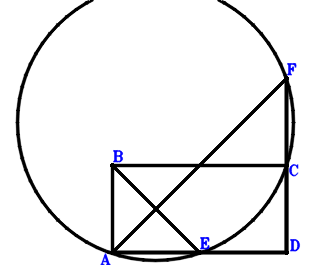
习题 2．如图，在△ABC中，设BC为最大边，在BC上取点P、Q，满足BA=BQ，CA=CP，求证：QP^2=2*PB*CQ.
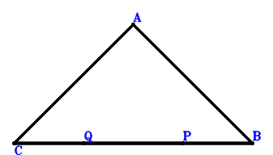
习题 3．如图，在△ABC中，D是BC上的点，若AB⊥AC，AD⊥BC，求证：BA^2=BC*BD.
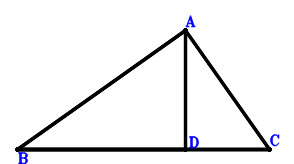
习题 4． 如图，四边形ABCD内接于圆 ，直线AB交CD于P，则PA*PB=PC*PD.
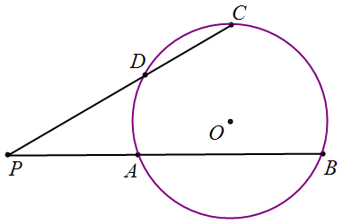
习题 5．如图，在△ABC中，AB=AC，延长AB到E，使得BE=AB，D是AB中点，求证：CE=2CD.
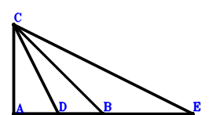
习题 6．如图，圆O内接四边形ABCD，E、F、G分别是BC、AD、CD的中点，作平行四边形FOEN，求证：GN⊥AB.
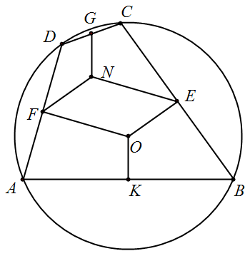
习题 7．如图，在平行四边形ABCD中，向两边延长AB到E、F，使得AE=AB=BF，连CE和DF，如果AD=2*AB，求证： EC⊥FD.
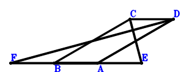
习题 8．如图，在△ABC中，CA⊥CB，AD、BE是中线，求证：AD^2+BE^2=5/4*AB^2 .
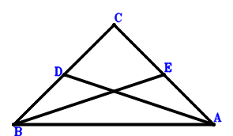
习题 9．如图，在梯形ABCD中,AD平行于BC. 在较长的底边BC上取一点E,使BE与梯形中位线等长.如果AC⊥BD，求证:DE也等于其中位线长.
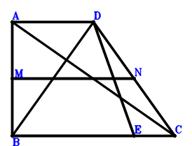
习题 10．已知点O是矩形ABCD所在平面上的任意一点,求证OA^2+CO^2=BO^2+OD^2.
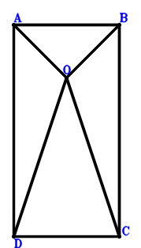
习题 11．求证：在四边形ABCD中，AD^2+BC^2=BA^2+CD^2与CA⊥BD互为充要条件.
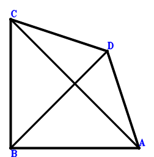
习题 12．如图，在等腰梯形ABCD中,AB平行于CD，求证: AC^2=AD^2+AB*DC .
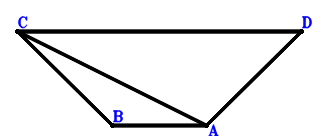
习题 13． 如图，在△ABC中,AB=AC,P为BC上一点.求证: AB^2=AP^2+BP*PC .
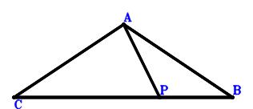
习题 14．如图，在梯形ABCD中，AD平行于BC, AD=3*BC，点M位于边CD上,且CM=2/3*MD，证明: BA=AD与BD⊥AM互为充要条件.
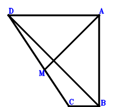
习题 15．如图，圆O内接对角线互相垂直的四边形ACBD，E是对角线AB、CD的交点，F是AC的中点，求证：EF⊥BD
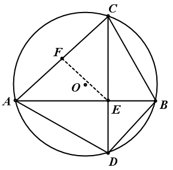
习题 16． 如图，圆内接四边形ABCD，圆心为P，对角线互相垂直交于点Q，E、F分别是BC、AD的中点，求证：QE=PF.
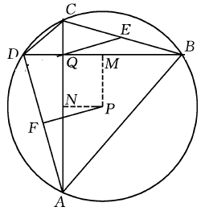
习题 17． 如图，在△ABC中，O是外心，H是垂心，∠C=60°，N是△ABC外接圆劣弧AB的中点，求证CN⊥OH．
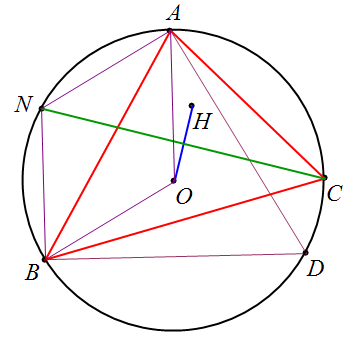
习题 18．如图，平行四边形ABCD内,P是任意点，满足PC=BC.证明:连结两条线段AP,CD中点的直线MN⊥BP.
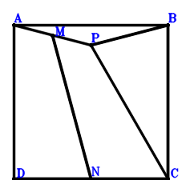
习题 19．如图，△ABC的边AB的延长线上取BD=AB,连结DC,若E为BC的三等分点靠近点B的一个分点,且3AE=CD,求证：△ABC为直角三角形.
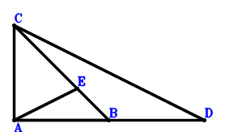
习题 20．如图，在△ABC中，D是AC的中点，E是BC上的点，且2BE=EC，求证：AB⊥AC与AE=2/3*BD互为充要条件 .
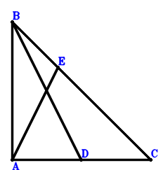
习题 21． 如图，在四边形ABCD中，AD平行于BC，BD⊥AC，M，N分别是AD，BC的中点，求证：2*MN=AD+BC .
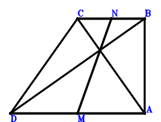
习题 22．如图，在△ABC中，AB=AC，D、E分别在边CA以及其延长线上，且CD=2AE，F是BD中点，求证：EF⊥BC.
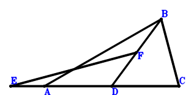
习题 23．如图3-3-1，已知PQ平行于矩形ABCD的边AD.求证：PA^2+QC^2=PB^2+QD^2．
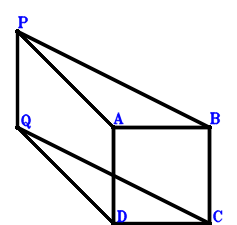
习题 24．如图，在△ABC中,AB小于AC,AD为BC边上的高.P为AD上一点,满足∠ABP=∠ACP.求证:P是△ABC的垂心．
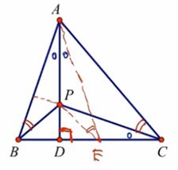
习题 25．如图，在△ABC中，AB=AC，D是BC上一点，E是AB上一点，AD⊥AC，DB=DE，求证：A、E、D、C四点共圆.
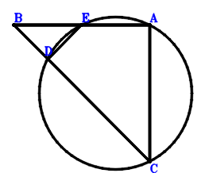
习题 26．如图,H是△ABC的垂心，AD是高，E和H关于BC对称，求证：E在△ABC的外接圆上.
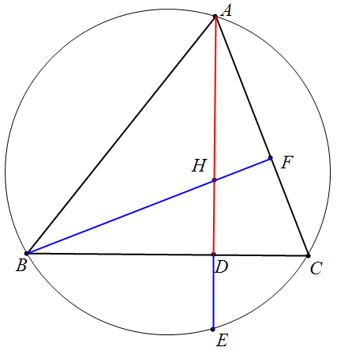
习题 27．如图，在△ABC中，D、E是AB、AC上的点，且B、C、E、D四点共圆，F是△ADE的外心，求证：AF⊥BC.
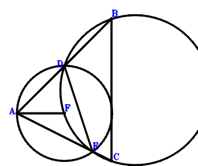
习题 28．如图，△ABC，过A的一条直线与以BC为直径的圆切于点D，E为AB上一点，满足AD=AE．过E作AB的垂线与AC交于点F，证明 AE/AB=AC/AF.
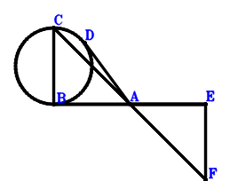
习题 29．P、Q在△ABC的AB、AC边上，AB⊥AC，M为BC中点，PM⊥QM，求证：PB^2+QC^2=PM^2+QM^2.
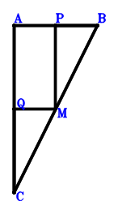
习题 30．如图，平行四边形FABC，AC=CB，FD=AB．求证：DB^2=AD^2+DC^2.
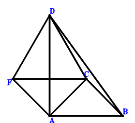
习题 31．如图，在△ABC中，AB=BC，M是AB中点，P是CM中点，B、N、C共线，BN=3*NC.证明：AP=MN.
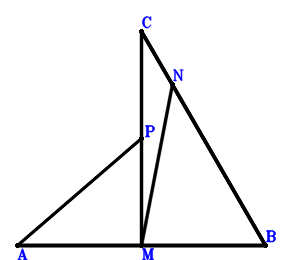
习题 32．如图，在△ABC中，AB=AC，CD⊥CA，E在BC上，且DC=DE，求证: AB⊥DE.
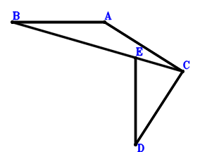
习题 33．如图，△ABC的边BC延长至D,使CD=BC,自B作BC的垂线与DA的延长线交于E,若AD=3AE，求证AB=AC.
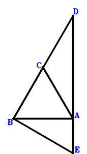
习题 34．如图，线段AB上有点C,在线段AB的同侧作正方形ACDE、CBFG，求证：AG⊥DB.
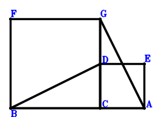
习题 35． 如图，在梯形ABCD中，AD平行于BC，AB⊥BC，求证：AC⊥BD与AB^2=BC*AD互为充要条件.
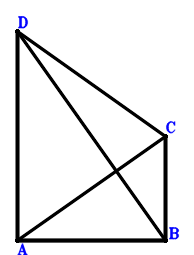
习题 36．如图，在等腰△ABC中，AB=AC，过C作CD⊥AB，求证：CB^2=2*AB*DB.
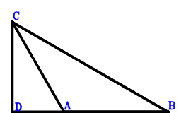
习题 37．如图，在△ABC中,AB=AC,在BA延长线上点取一点D,在AC上取点E,使AE=AD,连结DE,求证:DE⊥BC.
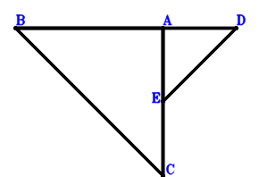
习题 38．如图，在三角形DBA的两边向外做正三角形FBD、正三角形ABE.如果AB⊥EF，求证：EB⊥DA.
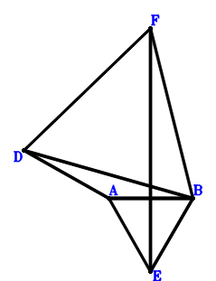
习题 39．如图，D在以AB为直径的圆上，延长BD到E、BA到F，如果BA*BF=BD*BE，求证：EF⊥AB.
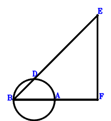
习题 40．如图，在△ABC中，CA⊥CB，BC=2AC，D为BC中点，E为AD上一点且2*AE=ED，则CE⊥AB.
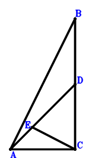
习题 41．如图，E、F分别是CA、DB的中点，角CBA=60度，DB^2=AB*CB，求证：4*EF^2=DA^2+DC^2.
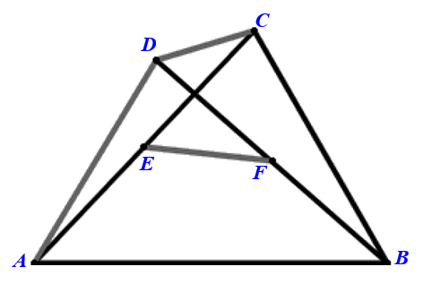
习题 42．如图，平行四边形ABCD，E、C、A共线且ED^2=2*EA*EC，求证：EB^2=AD^2+CD^2.
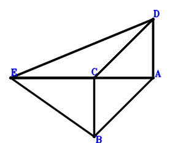
习题 43．如图，圆的弦AE与BC交于F，且AB=AC.求证: AB^2=AF*AE .
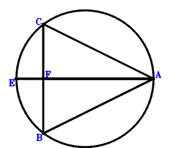
习题 44．如图，在梯形ABCD中，AD//BC，AB⊥BC，对角线BD⊥DC. 求证：DB^2=AD*BC.
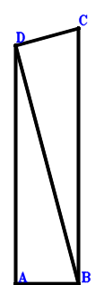
习题 45．如图，在△ABC中，CA⊥BC，M为BC中点，MD⊥AB于D，求证: DA^2=CA^2+BD^2 .
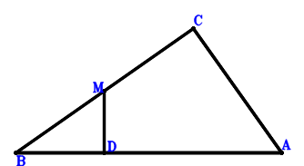
习题 46．如图，在△ABC中，AD是高，E是AD中点，F是BD中点，求证：AF⊥EC与AB⊥AC互为充要条件.
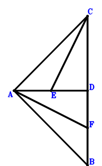
习题 47．如图，在△ABC中，向形外作正方形ABED、BCGF，P是平面内一点，满足AB⊥GP、DP⊥BC. 求证：BP⊥AC.
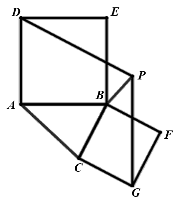
习题 48．如图，B在线段OA上，D在线段OC上，BA、DC交于点O，OA⊥DB，CA⊥OD，求证：OA*OB=OC*OD.
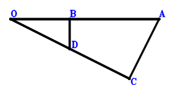
习题 49．如图，AD⊥DB，AE⊥EB，F是AB的中点，G是DE的中点，求证：FG⊥ED.
习题 50．如图4-1-2，在△ABC中，延长BC到D，使得CD=BC，延长CA到E，使得AE=2CA. 若∠BAC=90°，求证: AD=BE.
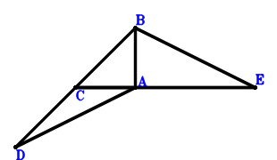